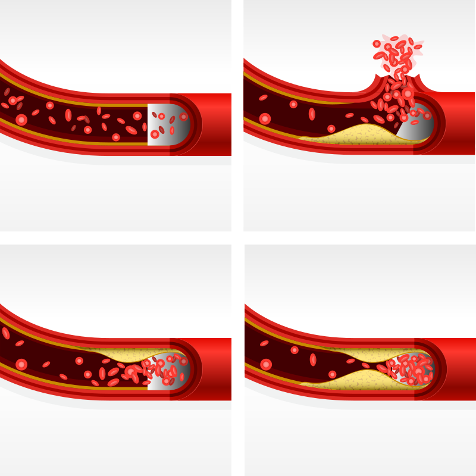

الكوليسترول
يجب أن تجيب خطة النشاط البدني عن الأسئلة التالية:
الكوليسترول هو جزيء يُنتجه الكبد، ويمكن أن تجده في المنتجات الحيوانية مثل صفار البيض والزبدة واللحوم الدهنية. يمكن أن يؤثر تناول طعام مرتفع الكوليسترول على قلبك عن طريق سد الأوعية الدموية في القلب، مما قد يؤدي إلى تصلب الشرايين والإصابة بأمراض القلب والأوعية الدموية الأخرى.
البروتينات الدهنية هي جزيئات تحمل الكوليسترول في جميع أنحاء جسمك. يمكنك اعتبارها كجزيئات نقل. وهناك نوعان من البروتينات الدهنية:
- البروتينات الدهنية عالية الكثافة (HDL): هذا النوع من البروتينات الدهنية يقوم بإزالة الكوليسترول من الجسم، خاصةً من أماكن مثل القلب والأوعية الدموية، وبالتالي يمكن أن يمنع الترسبات وانسداد الشرايين
- البروتينات الدهنية منخفضة الكثافة (LDL): وهي تحمل الكوليسترول في الدم. ويمكن أن يكون هذا ضارًا بصحتك لأن المستويات العالية من الكوليسترول في الدم يمكن أن تؤدي إلى انسداد الشرايين وبالتالي منع الأكسجين من الوصول إلى أجزاء أخرى من الجسم
